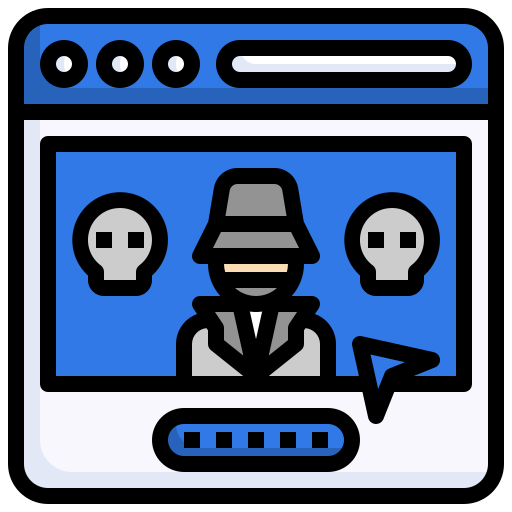
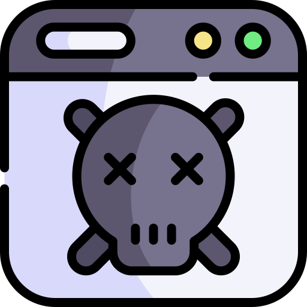
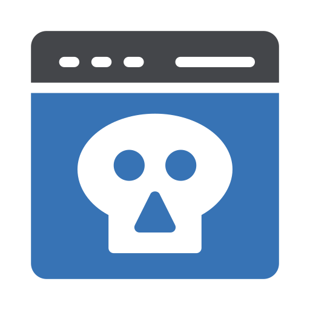
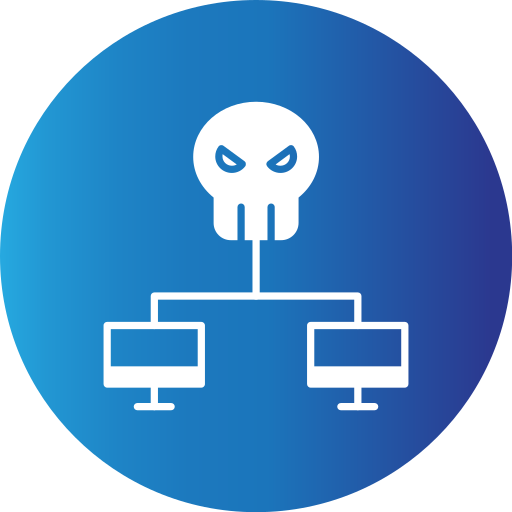
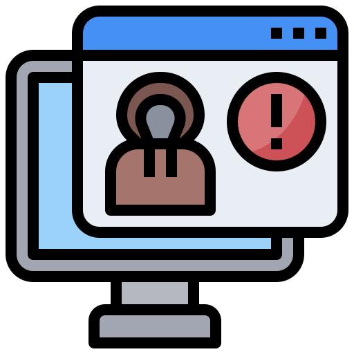

DarkNet – какие угрозы
живут в тени
Что такое даркнет и почему
там продаются
наши данные?
Что такое даркнет?
DarkNet — скрытая сеть.Cегмент интернета, который скрыт из общего доступа. Соединение в нем устанавливается между доверенными участниками в зашифрованном виде, с использованием нестандартных портов и протоколов. В даркнете используют собственные домены, и адресное пространство.Простыми словами Даркнет - черный рынок, где всё происходит анонимно.
Товары на Даркнете
Tor
Попасть в даркнет можно с помощью специального ПО — например, Tor Browser или I2P.
Tor (сокращенно от англ. The Onion Router)-браузер, который шифрует
трафик, когда вы находитесь внутри,
но на выходе его все же можно отследить.
Как предотвратить утечку своих данных в даркнет?
Полностью защититься от утечки невозможно: иначе придется отказаться от мобильного банка, госуслуг и большей части документов. Но можно минимизировать количество данных, которые могут попасть в руки мошенников.

Не размещайте в Сети фото документов, включая электронные билеты и визы;

Не публикуйте в открытом доступе свою геолокацию или хотя бы делайте это в закрытом профиле;

Не вводите персональные и платежные данные на подозрительных сайтах;
Не переходите по ссылкам в письмах и сообщениях, если не уверены в отправителе;

Используйте разнообразные и сложные пароли в разных аккаунтах.

Используйте двухфакторную аутентификацию везде, где это возможно;

Не указывайте основной номер телефона и e-mail при регистрации на сайтах объявлений или заполнении анкет для получения карт лояльности и кредитов, участия в акциях.
.png)
Обращайте внимание на приложения, которые требуют разрешения, не обязательные для их работы предупреждения от антивирусного ПО,входах в аккаунт с неизвестных устройств.